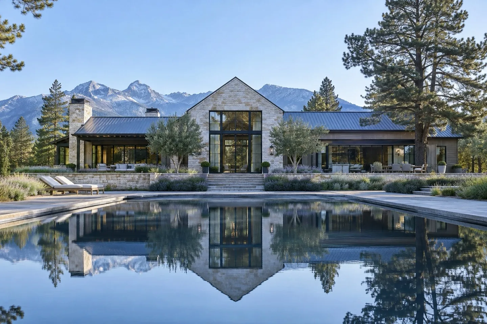
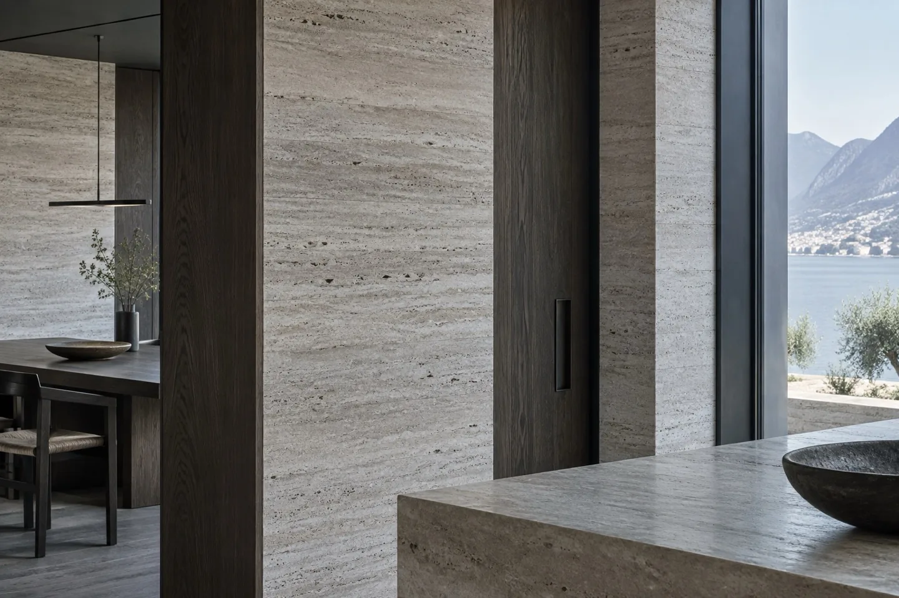
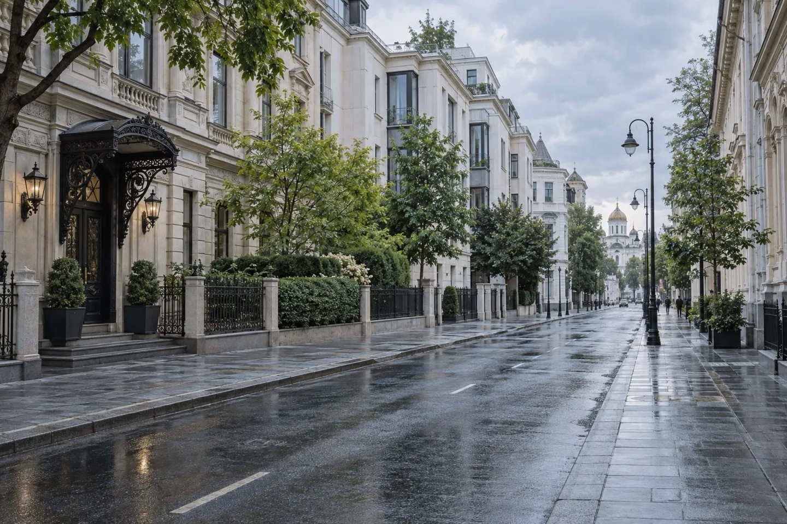
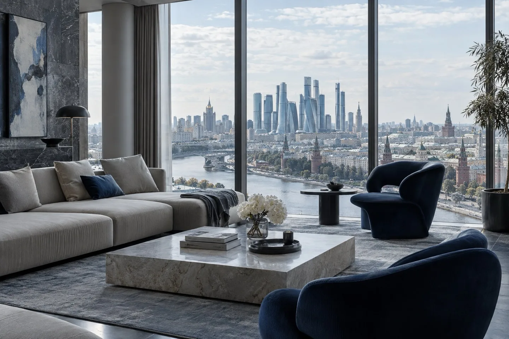
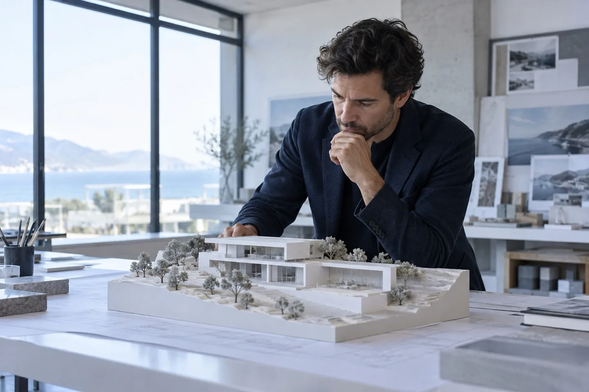
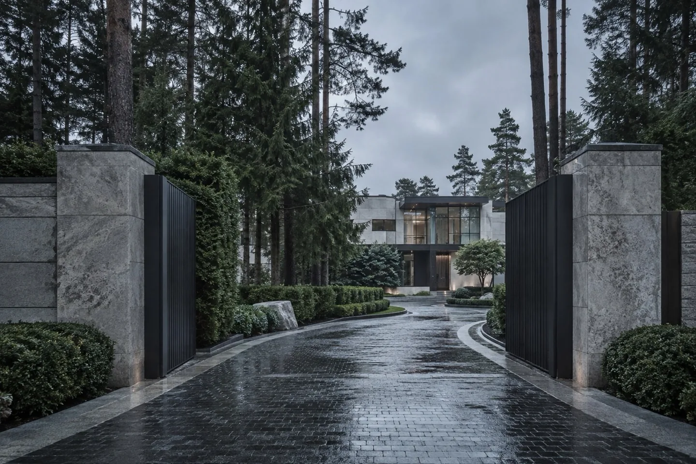
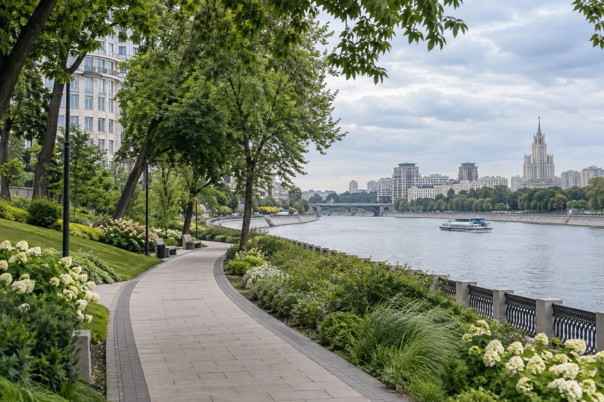
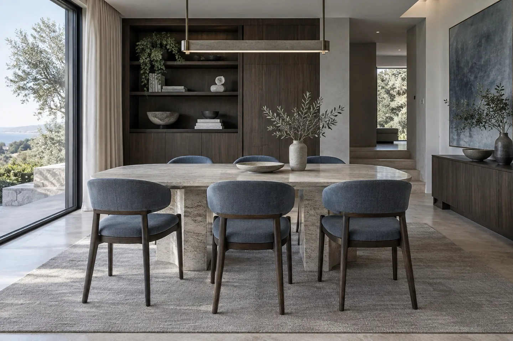
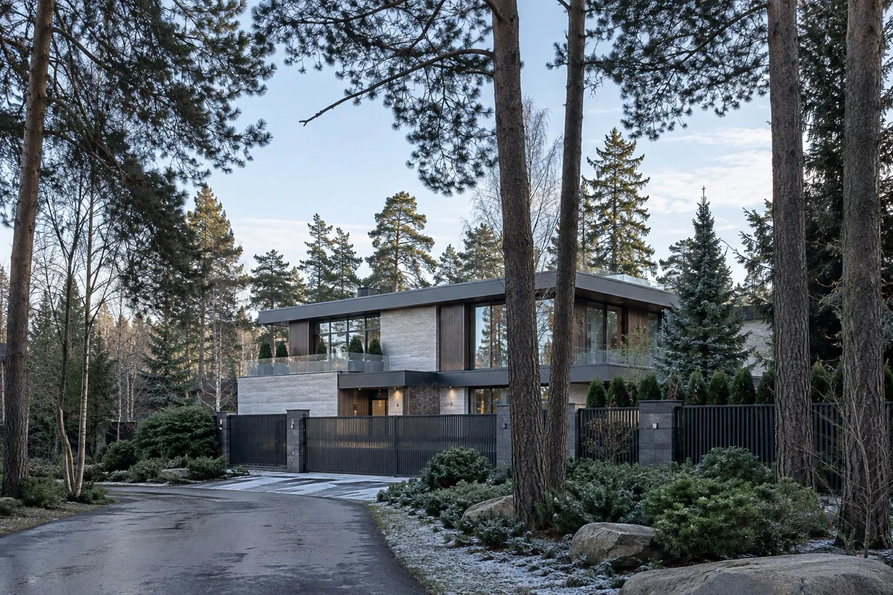
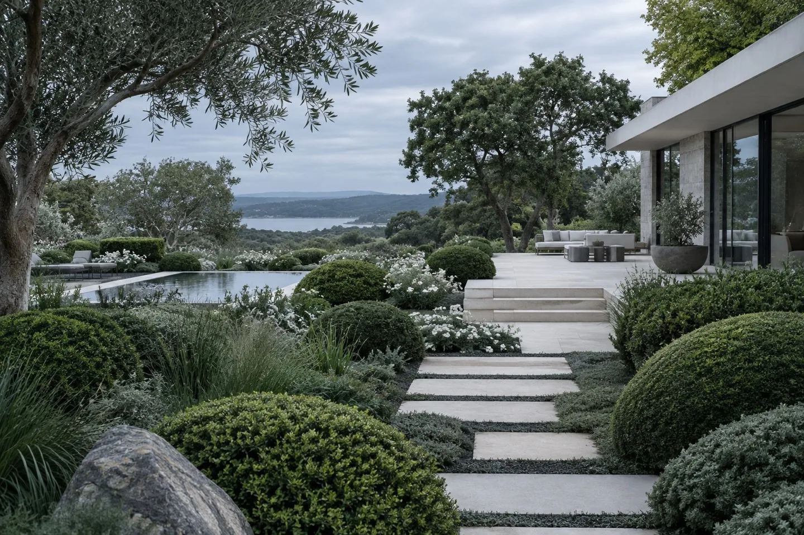

Выбор редакции
Почему загородный дом снова стал главным активом семьи
Разбираем детали, которые определяют качество жизни и устойчивость стоимости.
Читать →Главная / Журнал
Atelier Journal
Наблюдения за рынком, разговоры с архитекторами и гиды по районам Москвы.

Разбираем детали, которые определяют качество жизни и устойчивость стоимости.
Читать →
Травертин, дуб и латунь в современной архитектуре.
Читать →
Район для тех, кто ценит культурный слой города и камерную улицу.
Читать →
Спрос на верхние этажи стал более избирательным.
Читать →
Как найти равновесие между выразительной архитектурой и повседневным удобством.
Читать →
Сравниваем локации, инфраструктуру и качество предложения.
Читать →
Повседневный ритм одного из самых зелёных районов центра.
Читать →
Три материала, которые создают тёплую и долговечную основу интерьера.
Читать →
Новые запросы покупателей и роль сложившегося окружения.
Читать →